|
KV
Mechelen - KSK Ronse (2-2) 9 oktober 2005
|
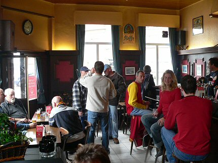
Verzamelen in "De laatste rust".
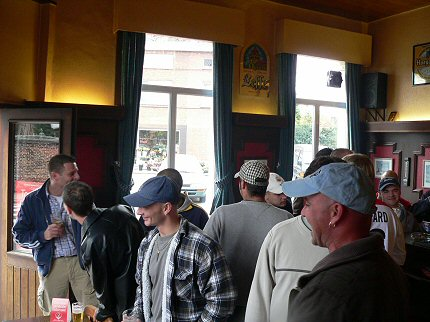
Het werd stilaan drukker.
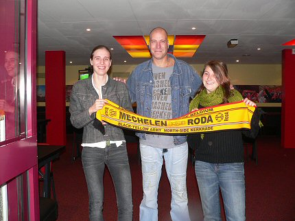
Op weg naar het stadion bezochten we even het businessgedeelte alwaar
Maurice met deze gastvrouwen op de foto mocht.
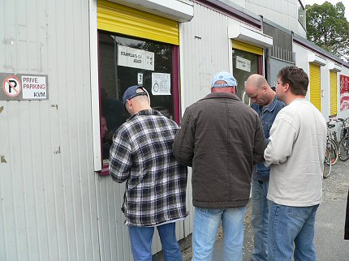
Staanplaatsen, 10 euro, nagenoeg vrije plaatskeuze.
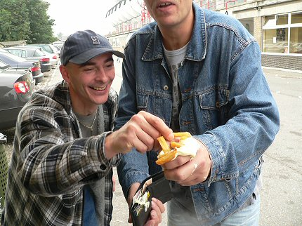
Een nieuwe snack Achter De Kazerne; een vuist vol frites met mayonaise.
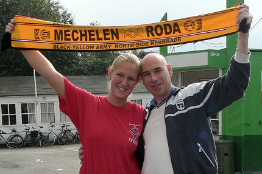
Dever Catering, best wel lekker.
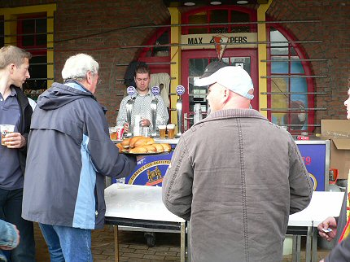
Een koel biertje en verse pistolets. Door al dat lekkers komen we vooreerst
niet aan voetbal toe.
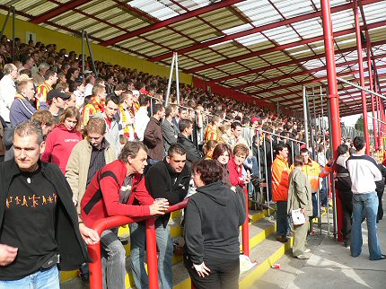
Het was erg druk in de vakken H-I-J.
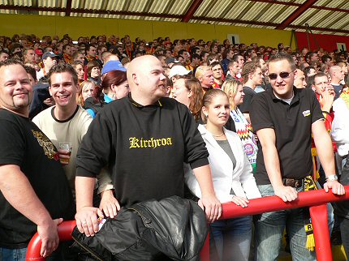
De gasten van Ymmit hebben een goed plekje bemachtigd.

En daar is eveneens de goedgeluimde Davke.
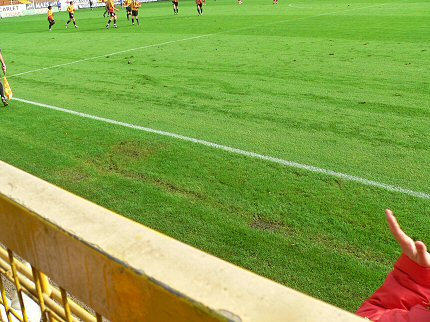
De hekken zijn weg bij KVM. Onderwijl applaus voor de thuisploeg die op
1-0 is gekomen door een doelpunt van Bert Dhont, (21').
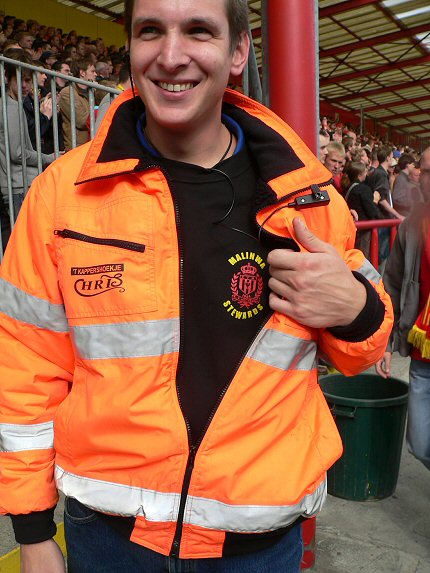
Een vriendelijke en behulpzame Malinwa-steward.
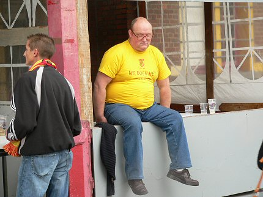
Ruststand: 1-0
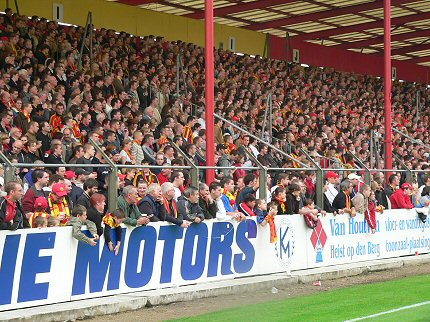
Verder met de tweede helft waarin KVM vele kansen verprutst.
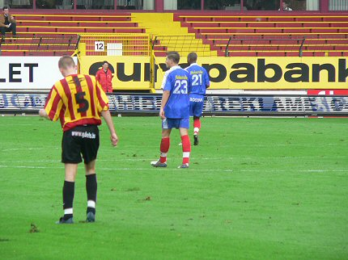
En dan scoort de tegenstander dus. Na zestig minuten staat het 1-1.
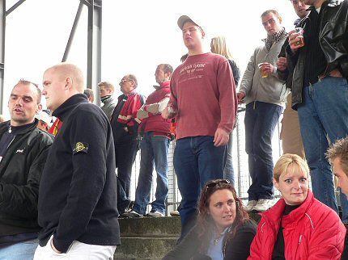
Een hele club Rotterdammers achter de goal. Het bleken Sparta-supporters.
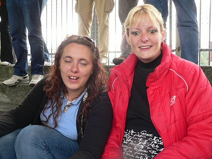
Tot 22 oktober op het Kasteel. Welk vak ook alweer?
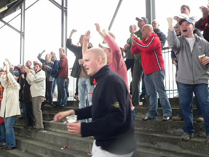
Vreugde nadat Masina, Mechelen weer op voorsprong brengt: 2-1, (66').
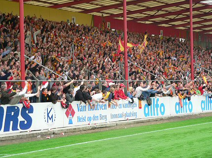
Gaat Malinwa dan eindelijk zegepralen?
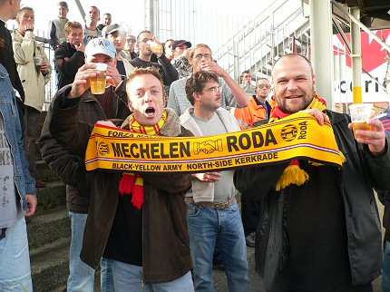
Helaas, 4 minuten voor tijd wordt het 2-2, maar deze fans blijven vrolijk.
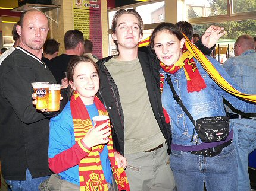
De kantine was aardig vol, maar ook buiten stonden veel mensen. Het was
immers schitterend nazomerweer.
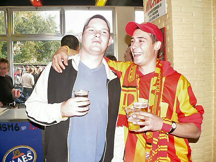
De linker persoon lijkt nog niet over het puntverlies heen.
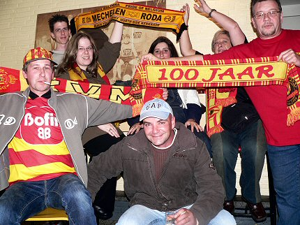
Hier wordt gewoon doorgefeest.
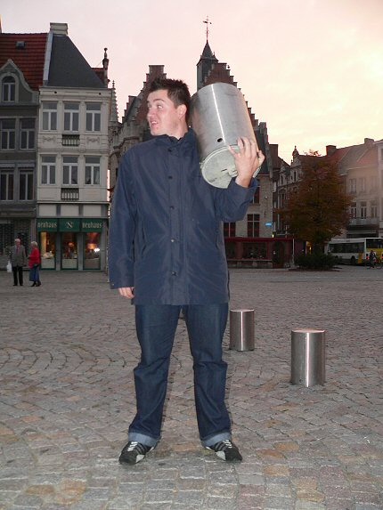
In het eerste avondschemer scoort Ramon een uniek souvenier. Een mooie
oefening voor volgende week als de Northside van Kaalhei wordt gesloopt.
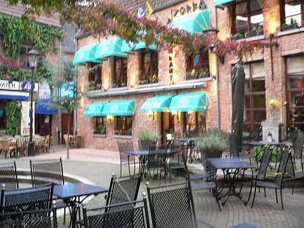
"Zorba" tot nooit meer!
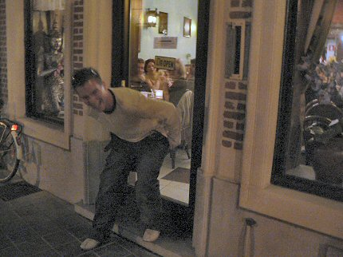
Remco trakteert de gasten van een etablissement in de binnenstad op een
onverwacht dessert.
© Koempels Pleasure Dome
|